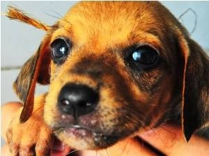
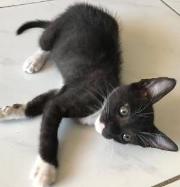
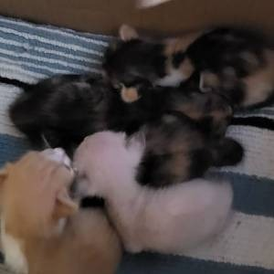
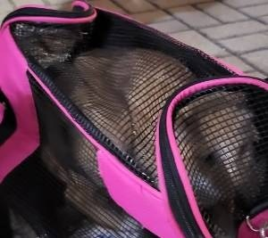
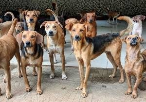
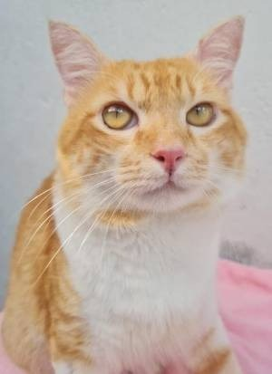
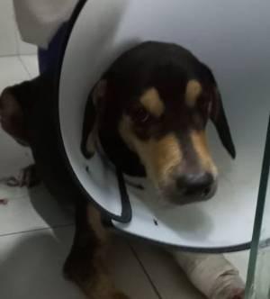

ONG's e Instituições
Pets para adoção e doação

-
Cachorrinho para adoção disponível pela ONG: Adota JP.
Nome: Ptolomeu
Idade:7 meses
Gênero: Macho
Porte: Pequeno
Cartão de vacina: Em dia
Comorbidades: nenhuma

-
Gatinho para adoção disponíveis pela ONG: Bicho a Bessa.
Nome: Betinha
Idade:1 ano e 3 meses
Gênero: Fêmea
Porte: Pequeno
Cartão de vacina: Em dia
Comorbidades: nenhuma

-
Gatinhos para adoção disponíveis pela ONG: Bicho a Bessa.
Nome: --
Idade: 3 meses
Gênero: Misto
Porte: Ninhada
Cartão de vacina: não completo
Comorbidades: nenhuma

-
Gatinhos para adoção disponíveis pela ONG: Bicho a Bessa.
Nome: Gael
Idade: 2 anos
Gênero: Macho
Porte: Médio
Cartão de vacinação: Em dia
Comorbidades: nenhuma

-
Cachorrinhos precisando receber doações: Amigo Bicho.
Nome: --
Idade: 2 - 4 anos
Gênero: --
Porte: Médio/Grande
Cartão de vacinação: não completo
Comorbidades: nenhuma

-
Gatinhos para adoção disponíveis pela ONG: Bicho a Bessa.
Nome: Jorge
Idade: 3 anos
Gênero: Macho
Porte: Pequeno
Cartão de vacinação: Em dia
Comorbidades: nenhuma

-
Animais precisando de doações: Centro de Zoonoses .
Nome: Cláudio
Idade: 2 anos
Gênero: Macho
Porte: Médio
Cartão de vacinação: Em dia
Comorbidades: nenhuma